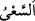

en uzağına kadar ulaşmış ve bu zat da îman etmiştir. Şehrin surları on iki mil idi.
el-Müfredât’ta geçtiği üzere “
” koşmaksızın hızlı yürümektir. Şehrin öbür
ucundan koşarak gelen adam ile ulemâ nezdinde “sâhib-i Yâsîn (Yâsîn sûresinde zikri
geçen kimse)” diye meşhur olan Habîb b. Neccâr kasdedilmiştir. Bunun sebebi daha
önce geçmişti. Bazı târih kitaplarında onun İskender-i Rûmî’nin neslinden olduğu
yazılıdır. Ona Habîbü’n-neccâr (Marangoz Habîb) isminin verilmesi şehir halkının
putlarını tahtadan imal ettiği içindir.
Fakir (Bursevî) der ki: “Habîbü’n-neccâr’ın elçiler vâsıtasıyla îman etmiş olması
durumu âşikârdır. Cumhur da bu görüştedir. Peygamberimiz (a.s.)’ın “Ümmetlerin en
önde gidenleri üç kimsedir. Onlar göz açıp kapayıncaya kadar bile Allah’ı inkar
etmemişlerdir. Bunlar Ali b. Ebî Tâlib, Sahib-i Yâsîn (Habîbü’n-neccâr) Fir’avn
âilesinden îman eden zattır.”[122] Bu hadisin mânâsı bunlar putlara secde etmemişler ve
şeriatın asıllarından olan hiçbir hükmü ihlâl etmemişlerdir. Put îmal etmek onlara secde
etmeyi gerektirmez. Süheylî’nin et-Ta’rîf’inde geçtiği gibi çok açık olan onun marangoz
olduğudur. Marangoz olması, put îmal etmesini gerektirmez.
Aralarında altı yüz sene olmasına rağmen Habîbü’n-neccâr’ın Rasûlullah (s.a.)’e
îman edenlerden olduğu da söylenmiştir. Onun îman etmesinin sebebi Allah’ın kitabını
(İncili) bilen âlimlerden olmasıydı. İncil’de Peygamberimiz (s.a.)’in vasıflarını ve
gönderileceği vakti görmüş ve ona îman etmiştir. (Hz. İsâ’dan sonra) Peygamberimiz
(s.a.) gönderilmeden başka bir peygambere de îman etmemiştir. Ya da Peygamber
(s.a.)’den başka daha gönderilmeden kendisine inanılan bir peygamber yoktur.
Süyûtî’nin dediği gibi Peygamberimiz (s.a.) gönderilmeden önce Habîbü’n-
neccâr’dan başkaları da O’na iman etmiştir. Mekke ve çevresinde tevhîd inancını ilk
olarak ortaya koyan Kus b. Sâide’dir. Bir hadîste şöyle buyrulmuştur: “Allah Kuss’a
rahmet etsin. Ben kıyamette onun tek başına bir ümmet olarak diriltileceğini
umuyorum.”[123] Hz. Hatice (r.a.)’ın amcaoğlu Varaka b. Nevfel, Zeyd b. Amr b.
Nüfeyl’de Peygamberimiz (s.a.) gönderilmeden ona inananlardandır.
Tübba’ da Peygamberimiz (s.a.) gönderilmeden O’na îman eden ve tevhid inancını
ortaya koyanlardandır. Tübba’ın kıssası şöyledir: Tübba’ ordusuyla birlikte (ileride
Peygamberimiz (s.a.)’in hicret edeceği) Medine’den geçiyordu. Komutasında yüz otuz
bin süvari, yüz on üç bin piyade asker vardı. Tubba’a tabilerinden ilim ve hikmet sahibi
dört yüz kişinin oradan ayrılmamak üzere aralarında sözleştikleri haber verildi. Tübba’
onlara bunun hikmetini sordu. Onlar da bu yerin şerefinin ileride ortaya çıkacak
Muhammed isimli kimse sebebiyle olduğunu, burasının O’nun ikamet yeri olacağını ve
O’nun buradan çıkmayacağını söylediler. Tübba’ orada onlardan her biri için bir ev
yaptırdı. Kendilerine birer cariye satın aldı. Bu câriyeleri âzâd edip onlarla evlendirdi.
Onlara bol ihsanlarda bulundu. Bir mektup yazıp mühürledi ve onlardan büyük bir
âlime verdi. Eğer Muhammed (s.a.)’in devrine ulaşırsa bu mektubu Hz. Muhammed
(s.a.)’e vermesini emretti. O mektupta Tübba’ Peygamberimiz (s.a.)’e ve onun dînine